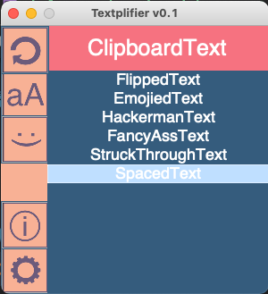
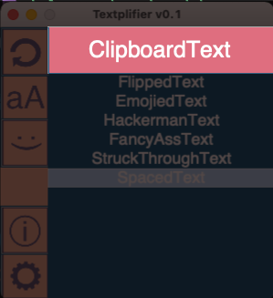
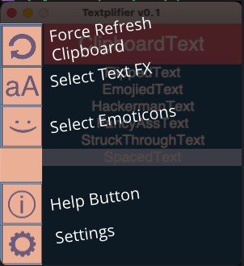
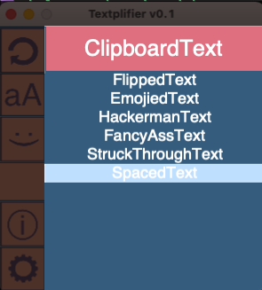
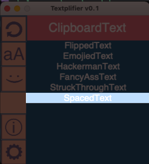
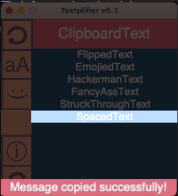
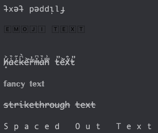
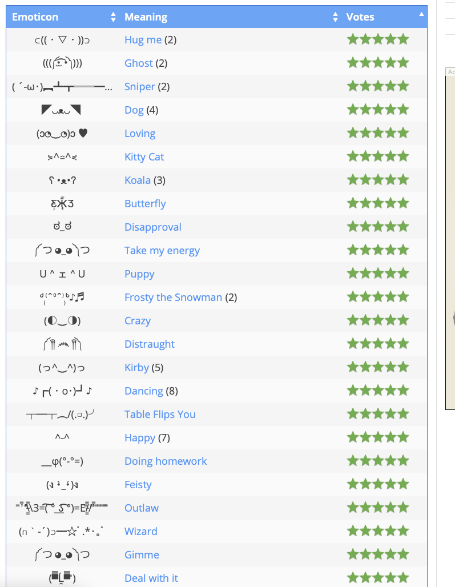
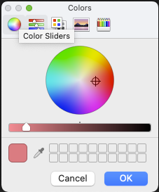
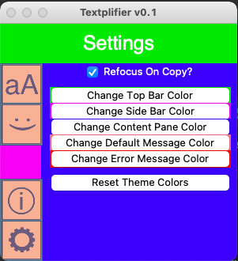

For Version 0.1
Open the app (Source code or packaged)
The top of the app is category info, for TextFX mode, it is the copied text of your clipboard
The left side of the app is the "sidebar", where you can select a category
The right side of the app is the "selector", where you can do actions based on the category selected in the "sidebar"
You can select items in the "selector" by single clicking the option, it will be highlighted on the first click
If you double click the element, it'll copy the result to your clipboard, for easy pasting. A message box at the bottom should appear to indicate if the action succeeded
These are the effects you can currently apply to copied text!
This program uses this site to offer a wide variety of emoticons to choose from. However, it requires an internet connection at app startup.
Refocus on copy - check if you would like the window to be refocused every time you copy something. Warning: May be annoying if you are programming or doing any task that involves heavy copy & paste!
^ Turn this off to avoid headaches!
The settings panel also offers customizable color schemes. You can cliuck on any of the buttons to choose a color of your desire!
You can make funky combos like this: (note the buttons won't change as they are images)
